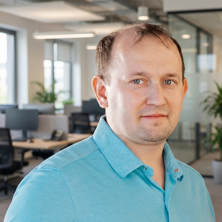

Александр Скобелев
Тестирую веб-сервисы, мобильные приложения и API около 2 лет. Имею более 10 лет инженерного опыта в отладке сложных систем и разработке программных модулей. Системно подхожу к поиску дефектов, навожу порядок в документации и пишу понятные баг-репорты.

Опыт в QA — около 2 лет
Тестирование внутренних веб-сервисов, клиентского портала и интеграций с CRM: Web, REST/SOAP API, SQL и логи.
Инженерный фундамент (10+ лет)
Разработка и отладка программных модулей (постпроцессоров ЧПУ), работа по строгим стандартам и системный подход.
Инфраструктура и автоматизация
Самостоятельно разворачиваю окружения в Docker и Linux, читаю серверные логи, пишу простые автотесты API в Postman (JS).
Ключевые навыки и технический стек
Инструменты, с которыми я работаю на практике
Тест-менеджмент и документация
Виды тестирования
API и сетевое взаимодействие
Отладка, логи и мониторинг
Базы данных и инфраструктура
Опыт работы
Переход в тестирование внутри компании и сильная инженерная база
ООО «Делкам-Самара-Д»
- Проводил функциональное, регрессионное, Smoke и кроссбраузерное тестирование внутренних веб-сервисов, клиентского портала (B2B/B2C) и интеграций с CRM.
- Создавал и поддерживал тестовую документацию с нуля: тест-кейсы и тест-раны в TestIT, чек-листы в Miro, баг-репорты в Яндекс Трекере.
- Проверял авторизацию, сессии, верстку по макетам в Figma и мобильные сценарии (PUSH-уведомления, диплинки).
- Тестировал REST API, SOAP (WSDL) и WebSocket через Postman (коллекции, окружения, базовые автотесты на JS), Swagger и SoapUI.
- Локализовал ошибки через Chrome DevTools, Charles Proxy (Breakpoints, Map Local, Map Remote, Throttling) и создавал заглушки в WireMock.
- Проверял данные через SQL в PostgreSQL (DBeaver, Metabase), работал с MongoDB, Kafka, логами в Kibana, Grafana, Jaeger, Linux и Docker.
- Разрабатывал, отлаживал и тестировал программные модули (постпроцессоры для станков с ЧПУ) по строгим техническим требованиям.
- Проверял граничные условия, логику генерации управляющего кода и работу модулей на сложных сценариях до передачи в эксплуатацию.
- Выполнял проектные заказы на разработку и проверку программных модулей, оформлял подробную техническую документацию.
ООО «ДС-Инжиниринг» — Инженер-технолог-программист 1-й категории
- Более 10 лет работы со сложным инженерным ПО (CAD/CAM-комплексы, промышленное 3D-сканирование, координатно-измерительные машины) и отладки сложных систем.
- Оформлял техническую документацию по строгим стандартам (ГОСТ/ЕСКД), проводил технические консультации и инструктажи для заказчиков.
- Вне работы самостоятельно администрирую домашнюю серверную инфраструктуру: Linux, Docker-контейнеры, NAS-сервер и сетевое оборудование.
Образование и сертификаты
Высшее техническое образование и профильная подготовка
QA Studio — «Инженер по тестированию»
Сертификат от 28.10.2026 (139 часов): клиент-серверная архитектура, Web, бэкенд, снифферы, тест-дизайн, SQL, REST/SOAP, логи.
GeekBrains — Технические сертификаты
Успешно пройдены программы: «Git», «Figma», «Основы программирования», «Компьютерная грамотность».
Филиал СамГТУ (г. Сызрань)
Автоматизация технологических процессов и производств (Компьютерные системы управления в производстве и бизнесе).
Давайте обсудим задачи
На связи в Telegram, по телефону и почте. Готов к собеседованию и тестовому заданию.